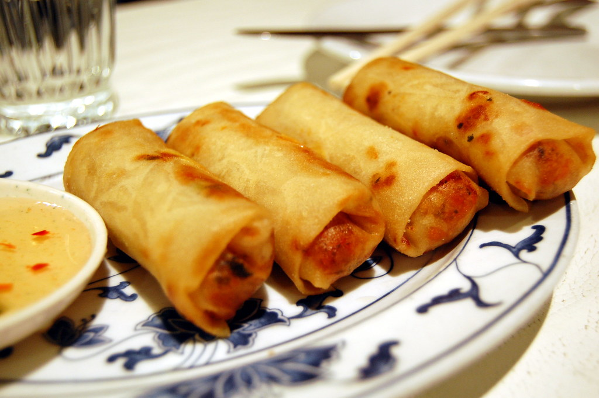

We are open M - F 12:00PM - 10:00PM and on weekends 12:00PM - 11:00PM
MENU
Appetizers
Spring Rolls: Tasty fried spring rolls. They come with pork and there is also a
vegetarian option

Gyoza: Gyoza is a meat-filled pan-fried potsticker traditionally served as an
appetizer or side dish in Japan. The crisp-bottomed golden dumpling usually contains ground pork or
beef, but we also have a vegetarian option.
Japanese Chilled Tofu (hiyayakko): Made of silken tofu topped with dried bonito
flakes, green onions, and freshly grated ginger and drizzled with a bit of soy sauce.
Salads
Japanese Spinach Salad: Spinach is blanched until tender and then dressed with a
nutty sesame sauce. It’s topped with roasted sesame seeds for extra crunch.
Japanese Seaweed Salad: Chewy, silky, and salty, seaweed salad has a very distinct
and delicious taste. Topped with soy sauce, sesame oil, red pepper, and pre-soaked seaweed.
Ramen Noodle Salad: Ramen noodles served cold with carrots, red cabbage, and green
onion.
Entrees
Tonkotsu Ramen: Originating from modern-day Fukuoka and lending its mouthwatering
fragrance to Tokyo’s Asakusa region, tonkotsu ramen is made from boiling pork bones for hours until
it brings a creamy cloudy look to the tonkotsu broth.
Miso Ramen: Coming from the Sapporo region of Hokkaido, miso ramen takes its name
from its main ingredient. This broth is strong and savory and has an opaque appearance. This dish
has different varieties: white miso, red miso, barley miso, and soybean miso.
Sushi Platter: Comes with a large variety of sushi. 12 pieces. You can also get a
party platter version of this, with 50 pieces os sushi.
Desserts
Anmitsu: Anmitsu is a Japanese parfait, created from agar-agar jelly. It is served
in the bowl with anko, peas, and
a variety of fruits such as peaches, pineapples, cherries, and satsuma orange. You can also choose
Mochi, ice cream, and
nontraditional fruits like strawberries.
Daifuku: Daifuku is a wagashi dessert made of mochi balls, normally stuffed with
anko. Different fillings include
strawberries, sweet cream, apricot jam, pureed chestnuts, and recently, coffee-flavored filling or
crème caramel.
Ice Cream: Vanilla, Chocolate, or strawberry ice cream served in a bowl or cone. (Free on your birthday)
Drinks
Ramune: Japanese style carbonated soft drink. There is a variety of flavors. 12oz.
Juice: Passion fruit, dragon fruit, orange, and apple juice. 12oz.
Beer: There is a selection of japanese crafted beers. Our signature beer is made from rice.